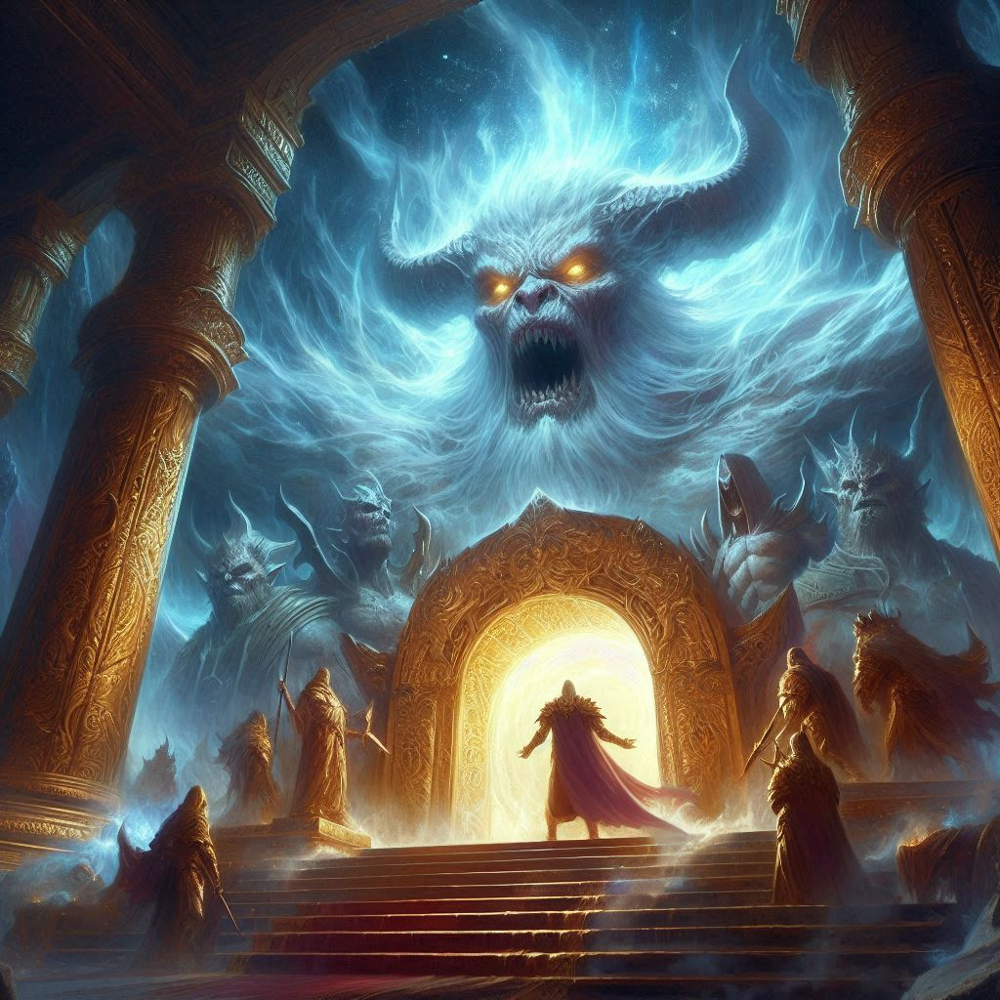
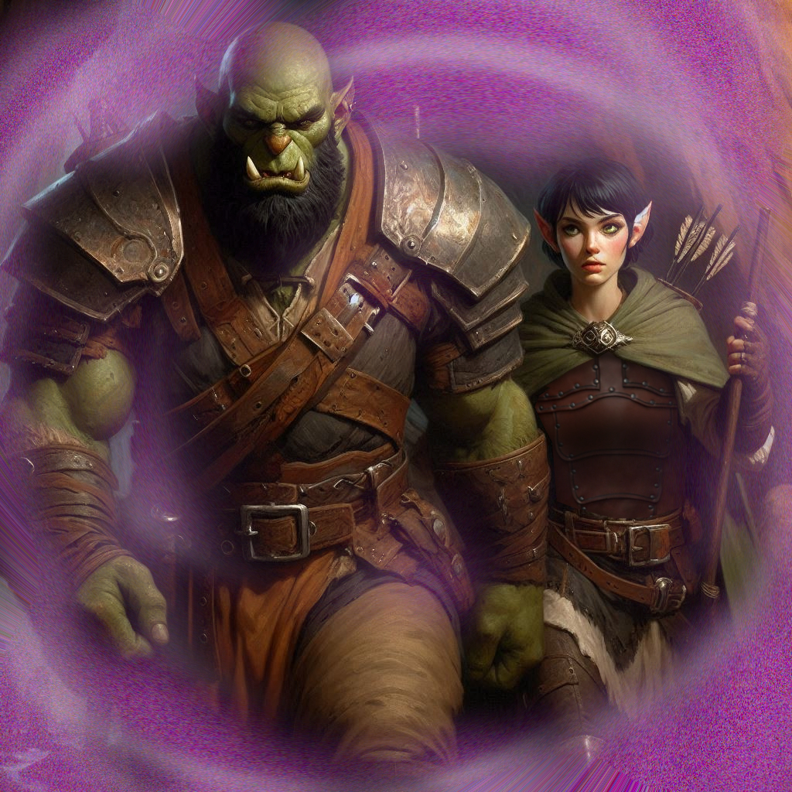

The Temple of Astaroth
The path to the Temple of Astaroth, an ancient, abandoned orcish shrine, winds through thick underbrush and forgotten trails. The air feels heavy with a sense of foreboding as you, Baider, and Elias approach the weathered stone structure that looms before you. Crumbling pillars, overgrown with vines, line the entrance. The temple’s exterior is ancient, bearing the scars of battles long past. A faint hum of magic lingers in the air, making your skin prickle.
“We’re here,” Baider says, his deep voice barely a whisper as he steps forward. His hand brushes the hilt of his battle hammer, a habit born of years spent in battle. "This place was sacred once. Now, it’s just a ruin filled with dangerous memories."
Elias, silent but watchful, glances at you. His bow rests in his hand, ready for anything. You feel the weight of his concern, though he tries to hide it. The cold stone steps of the temple seem to pull you in, each step echoing with the ghosts of ancient orcish warriors. You steel yourself, pushing past the uneasy feeling in your chest. There’s no turning back now.
Inside, the temple is a hollow shell of what it once was. The walls are etched with carvings, depicting battles between orcish chieftains and otherworldly creatures. Some of the carvings glow faintly, pulsing with old magic that still clings to the stone. A large, circular chamber lies ahead, its floor covered in dust and debris. At the center stands a weathered altar, cracked and worn by time.
"This is where it must be done," Baider says, his eyes scanning the room as if looking for something. He kneels in front of the altar, carefully pulling the rune stone from his pouch. "This rune... It holds the key to summoning Astaroth, Archon of the Orcs."
You glance at Elias, his brow furrowed with apprehension. “Do you really think Astaroth will help us?” he asks, his voice low.
Baider's gaze remains fixed on the rune stone. "He will, but not for free. Orc magic always requires a price. Be ready."
As Baider begins the incantation, the air in the temple shifts. The temperature drops, and an eerie wind stirs the dust from the floor. The ground beneath you trembles slightly, as though something deep within the earth is waking. Your heart pounds in your chest as the words of the spell reverberate through the chamber, the ancient orcish language rolling off Baider’s tongue with precision.
Suddenly, a gust of wind blows through the temple, and the shadows in the corners of the room seem to twist and writhe. From the center of the altar, a figure begins to materialize—massive, towering, and cloaked in dark armor. His eyes burn like embers, and the power radiating from him is palpable. Astaroth, Archon of the Orcs, stands before you.
"You dare summon me?" Astaroth’s voice is like a rumble of thunder, shaking the very walls of the temple.
Baider rises to his feet, meeting Astaroth's gaze with a steady resolve. "We need passage to the Shadow Realm, Archon. Yaldaboath threatens to break through, and we must stop him."
Astaroth's laugh is a deep, menacing sound. "Yaldaboath... my old rival." His eyes narrow. "And what will you offer me in return for this passage?"
Without hesitation, Baider steps forward, holding the rune stone aloft. “We offer you this. The stone of passage from Hemlock Caverns. With this, you will gain access to the ancient powers within the Realm of Shadows.”
Astaroth’s eyes flicker with interest as he reaches out, his gauntleted hand hovering over the stone. “A tempting offer, half-orc. Very well. I shall grant you passage to the Shadow Realm, but beware... the price of my aid may be heavier than you expect.”
“What price?” You look up at Astaroth, hoping not to incite his wrath.
“You will do my bidding at a later date, or suffer the fate of my lost tribe of unfaithful orcs of yore,” Astaroth sneers.
“Lost tribe of orcs?” Elias says, looking at Baider. Ghostly apparitions appear all around you in the temple, as if to convey a silent omen… a warning to all who would make sacrifice to Astaroth.
“My kinsmen who betrayed Astaroth,” Baider says, “rumored to be trapped in the Shadow Realm.”
With a sweep of his hand, Astaroth conjures a swirling vortex in the center of the chamber, a gateway to the Shadow Realm. The air hums with magic, and the portal shimmers with an eerie light. You can feel the pull of the dark realm on the other side.
Baider glances back at you and Elias. "This is our only chance."
Without hesitation, you step forward, the weight of your mission pressing heavily on your shoulders. As you pass through the portal, the world around you dissolves into shadow. Darkness swirls around you, cold and oppressive, until you suddenly find yourself standing on the barren plains of the Shadow Realm. The sky above is an endless expanse of gray, and jagged black mountains rise in the distance.
You glance around and spot a small figure lurking near the rocks—a goblin, watching you with wide, curious eyes. The goblin steps forward cautiously, his gaze darting between you and Baider. "You... are not like the others," he says in a raspy voice.
Baider tenses, but the goblin raises his hands in a gesture of peace. “My name is Shamurel. I can help you. You’re looking for Umbra’Thal, aren’t you?”
You exchange a glance with Elias, who nods in silent agreement. “Yes,” you say. “We need to get to the dark elf capital. Can you take us there?”
Shamurel grins, revealing sharp teeth. “I know the way. But the dark elves are dangerous. If you want to survive, you’ll need me.”
Baider narrows his eyes at the goblin, but before he can speak, Shamurel adds, “And don’t worry... I hate the dark elves more than you ever could.”
The tension in the air lessens slightly, and Shamurel beckons for you to follow. "This way. But move quickly... The dark elves have eyes everywhere."
You, Baider, and Elias follow the goblin, your footsteps muffled in the strange, silent landscape of the Shadow Realm. As you walk, the sense of danger grows stronger, like a storm on the horizon. You know the hardest part of your journey is yet to come.
“I don’t trust this goblin,” Elias whispers. “What if he’s leading us into a trap?”
“Anything is possible,” Baider nods.
“What if we found the Lost Orcs of Astaroth?” you suggest. “Baider, could you convince them to fight the dark elves with us?”
“Like I said, anything is possible,” Baider shrugs.